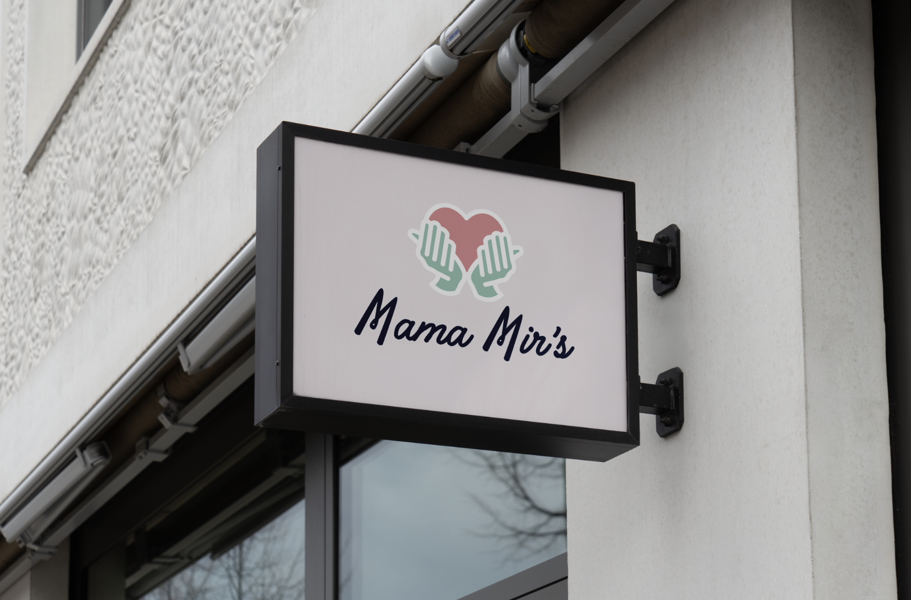
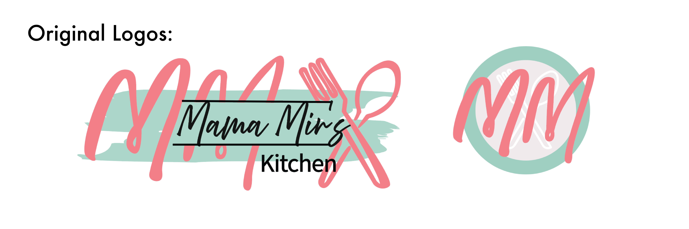

Brand/Logo Design
I had the opportunty to provide graphic design services to a local business called Mama Mir’s Meals. The kitchen sold family-style meals and more. I designed content that reflects the brand’s warm, welcoming spirit and love for gathering around food. My goal was to capture a consistent mood of comfort and togetherness while highlighting the fresh, shareable meals that bring people closer.

For Mama Mir's Meals, I explored multiple logo variations through experimentation. It was important to the client that the logo was not solely centered around food. Instead, the logo was meant to be based on the business mission. To the client, Mama Mirs was doing more than just providing food. She was creating hand-made meals that served the community directly by increasing time spent around the table eating with family and friends. This is reflected in the hands of the new logo serving viewers with love.
The client wanted to keep a very similiar color palette but create a more professional and clean look. I created an arrangement of logos to use and rotate through.

I also developed a brand guideline and many graphic templates that gave detailed instructions to be used so that the brand would remain consistent after I left for school. It included ways to use the logos, fonts, colors, and more. The owner prefered to work in Canva so I developed much of the graphics in Adobe Illustrator and transfered them into Canva for her to use.
Graphics/Social Media
For Mama Mir’s Kitchen, I brought the brand to life on social media by creating fun, eye-catching content that made people crave more than just food. The ads made them want to be part of the community. From graphics to videos, I highlighted everything from the handmade meals to the catered dishes. My goal was to create a cohesive brand image and social media presence that shows how Mama Mir's convienant meals can bring people together.


I designed a variety of targeted social media ads for Mama Mir’s Kitchen, from promoting space rentals and back-to-school meal prep for busy families to showcasing catering for sports teams and special events. Each ad combined vibrant visuals with clear messaging to capture attention and communicate the brand’s versatility.
Much of the audience was reached via Facebook so my efforts were focused on strengthening the brand's presence on Facebook while also beginning to promote the business on Instagram.
One challenge of advertising was reaching the various different kinds of audiences. For example, we often sold to busy families, senior citizens, and trade workers. All had different needs. For examples busy families craved variety, seniors wanted comfort and connection, while trade workers looked for convenience.
Another challenge that I faced was advertising for all aspects of the business. We sold fresh food, frozen food, catered large meals or events, and also offered a space to rent for parties. Developing a marketing calender was essential to making sure I was checking all the boxes of the business.


I created a schedule of posts and campaigns to be posted according to the day of the week. For example, every Tuesday we urged customers to leave a comment or review on google or facebook to be entered into a giveaway. And every Friday, we posted a Freezer Find to highlight and item that is overstocked at a discounted price.
UX/UI Design
I was given the opportunity to build the website for Mama Mirs Kitchen. I had more than a year experience working behind the counter of this business so I understood the business's values and clientele. I wanted to ensure that the website met the unique needs and wants of the customers through clear navigation and tools. For example, convienance was very important to our customers so I included buttons that lead to the catolog page throughout the site.

One of the biggest challenges in building this website was weaving together the many sides of the business; food services, catering, rental opportunities, and employment, into one cohesive experience. To combat this, I made sure all sides of the business remained consistent with the brand, included seperate forms and pages.
It was important that the website was easy to navigate and understand because there were many different sides of the business. To ensure this clarity, I included step by step instructions on how to pre-order from the business.

It was important that I balanced professionalism with community. I wanted the online space to appear trustworthy and clear while still maintaining that small-town business that has a meaningful connectiong with its customers.